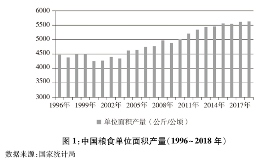
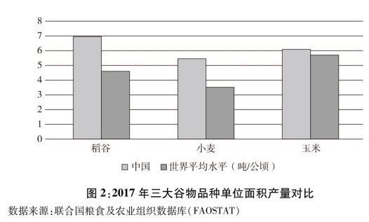
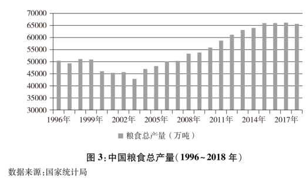

真题 · 实用类文本阅读
高标准农田与粮食安全
三则材料和三幅图表呈现全国粮食生产概况、临朐县山地农田改造与江下村的高标准农田建设。
导读
文体与题材：实用类文本阅读；三则材料和三幅图表呈现全国粮食生产概况、临朐县山地农田改造与江下村的高标准农田建设。
文本出处：2021年高考全国乙卷。国务院新闻办公室《中国的粮食安全》白皮书；张正瑜等《山东临朐 立足山区实际 科学谋划建设高标准农田》；李慧《粮食安全：把饭碗牢牢端在自己手中》（《光明日报》2020年12月24日）。
内容脉络：材料一先以政策说明和三幅图表呈现我国粮食生产的总体成就；材料二、三转向地方实践，分别说明临朐县和江下村怎样针对耕地条件改善设施、利用土地并提高粮食产能。
内容主旨：粮食安全既依赖稳定的粮食生产能力，也需要因地制宜建设高标准农田、改善农业基础设施和土地利用条件。
阅读重点：图表阅读须核对指标、单位、年份和比较幅度；跨材料概括须区分两地事实，并从不同措施中提取共同经验。
原文与随文研读
原文按结构分节；随文内容可定位至对应段落。
材料一：中国依靠自身力量保障粮食基本自给，并通过产能建设与政策部署维护粮食安全。
新中国成立后，中国始终把解决人民吃饭问题作为治国安邦的首要任务。70年来，在中国共产党领导下，经过艰苦奋斗和不懈努力，中国在农业基础十分薄弱、人民生活极端贫困的基础上，依靠自己的力量实现了粮食基本自给，不仅成功解决了近14亿人口的吃饭问题，而且居民生活质量和营养水平显著提升，粮食安全取得了举世瞩目的巨大成就。
党的十八大以来，以习近平同志为核心的党中央把粮食安全作为治国理政的头等大事，提出了“确保谷物基本自给、口粮绝对安全”的新粮食安全观，确立了以我为主、立足国内、确保产能、适度进口、科技支撑的国家粮食安全战略，走出了一条中国特色粮食安全之路。



材料二：临朐县针对山区耕地零散、设施不足的问题建设高标准农田，夯实稳产增产基础。
山东省临朐县是一个有着90多万人口和近90万亩耕地的山区农业大县。临朐县山区丘陵面积较大，而且地形错综复杂，起伏多变，成百上千亩集中连片且开阔平坦的农田很少见，加之农田基础设施落后，从自然村落到田间地头的道路基本都是土路，交通极其不便。用乡亲们的话说：“开门就见山，种田走半天。耕地就像百衲衣，一顶苇笠也能盖一块地。”近年来，临朐县在推进高标准农田建设时，立足山区实际，把解决地块零散、水电路不配套等问题作为重点，坚持集中连片规划建设，着力补齐农业基础设施短板，合理利用土地资源，为粮食稳产增产夯实了基础。“十三五”以来，全县共改造中低产田3.73万亩，建成高标准农田12万亩。
材料三：江下村通过农田改造、机械化和技术应用提高耕地质量与粮食产能，带动农民增收。
近几年，江西省南昌市安义县长埠镇江下村村容村貌有了翻天覆地的变化，全村6个村小组前前后后共修建了逾11公里的水泥路，95％的水塘进行了清淤处理，建成了3.2公里高标准农田沟渠。过去，江下村因土地贫瘠，一直没有找到产业发展的好路子，祖辈守着一亩三分地种水稻及常规农作物，产量较低的“斗笠田”随处可见。为改变现状，村干部主动为江下村争取了高标准农田项目，引进种粮大户盘活荒地。作为高标准农田的“集成模块”，越来越多的新技术在江下村大显身手——粮食耕、种、管、收实现全程机械化，逐步提高智能作业的精准度和覆盖率……去年11月，江下村2168亩高标准农田建设项目开始动工，项目如今已全部完成。现在村里的耕地质量普遍提升两个等级，粮食产能平均提高15％，亩均粮食产量提高100公斤，高标准农田已成为带动农民持续增收、实现贫困群众稳步脱贫的有力引擎。
第1题 · 图文判断
4．下列对材料一相关内容的理解和分析，不正确的一项是（3分）
A．我国粮食单位面积产量显著提高，2010年开始平均每公顷粮食产量突破5000公斤，粮食生产取得了举世瞩目的巨大成就。
B．2017年我国稻谷、小麦、玉米的每公顷产量明显高于世界平均水平，可见居民的生活质量和营养水平得到了显著提升。
C．2003～2015年，粮食总产量连续多年保持增长势头，中国特色粮食安全之路越走越稳健，粮食生产能力不断增强。
D．从2015年起，我国粮食总产量连续四年稳定在65000万吨以上水平，这有助于保障国家粮食安全、促进经济社会发展。
参考答案1展开 / 收起
参考作答
B。
审题与考查点
本题要求选出材料一理解不正确的一项，区间包括两段文字和三幅图表。分别核验单产、总产量、国际比较与居民生活水平，不把不同指标混作同一类事实。
文本分析
A项查看证据 ↗
正确。图1以公斤／公顷为单位，2010年的柱高已超过5000，此后维持在这一水平之上，且1996—2018年总体上升。材料一首段概括我国粮食生产成就，图文相互印证。
图表依据：图1。
B项查看证据 ↗
错误。图2中稻谷、小麦的中国单产明显高于世界平均水平，玉米两柱相近，只能说略高，不能将三者都概括为“明显高于”。此外，某一年单产的国际比较不能直接证明居民生活质量和营养水平的历时提升。材料一确已说明这种提升，问题在于选项所列证据与结论之间缺少必要联系，不能因此否认提升这一事实。
图表依据：图2。
C项查看证据 ↗
正确。图3显示2003年低点之后，至2015年的各年总产量逐年增加，符合“连续多年保持增长势头”。这一段的增长与材料一所述粮食生产能力增强相符；不能把随后个别年份的小幅回落移入该项限定的年份范围。
图表依据：图3。
D项查看证据 ↗
正确。图3中2015、2016、2017、2018年四根柱均超过65000万吨，符合“连续四年”的范围。稳定的粮食供给为保障粮食安全提供物质条件，与材料一所述基本自给和口粮安全目标一致。
图表依据：图3。
知识点
文本证据与阅读推论要求证据与结论具有相应关系。单产指单位土地的生产能力，总产量还受播种面积影响，居民营养状况又涉及消费结构等信息；指标相邻出现并不自动构成充分推论。
解题方法
先读图题、横纵轴及单位，再将各项的年份和比较对象逐一对回图中。B项须分两步核验：先比较三组柱高，再检查“可见”前后的证据与结论是否对应。
易误辨析
“三种单产都高于世界平均”不能改写为“三种都明显高于”。材料一明确肯定居民生活质量和营养水平提升，辨析B项时应指出推论不足，不应否认这一已给事实。
答案组织与检核
选择B。复核两处问题是否分开：玉米的比较幅度被夸大；单产国际比较不足以直接说明居民生活水平的变化。其余三项的年份、单位和趋势均能在对应图表中核对。
第2题 · 跨材料概括
5．下列对材料相关内容的概括和分析，正确的一项是（3分）
A．交通极其不便、产业发展路径缺失、开阔平坦的农田数量较少，这些曾经是制约临朐县山区发展现代农业的主要因素。
B．在提升粮食产能方面，临朐县山区与安义县江下村的工作侧重点有所不同，前者着力解决地块零散的问题，后者着重改变村容村貌。
C．“开门就见山，种田走半天”，这是临朐县山区地形和耕地的特点，安义县江下村“斗笠田”的地形地貌也呈现出这种特点。
D．村干部主动作为，引进种粮大户盘活荒地，利用新技术推进农业机械化，这是推动江下村农民持续增收、稳步脱贫的有效举措。
参考答案2展开 / 收起
参考作答
D。
审题与考查点
本题选“正确”的一项，考查材料二、三的信息归属与概括范围。核对每项谈的是临朐县还是江下村，并区分制约因素、具体措施和实施效果。
文本分析
A项查看证据 ↗
错误。材料二确认临朐县山区存在交通不便、集中连片且开阔平坦的农田少等问题；“一直没有找到产业发展的好路子”则是材料三对江下村过去状况的说明。选项把江下村的情况移给临朐县，混淆了信息归属；无须将“主要因素”单独判为错误。
B项查看证据 ↗
错误。材料二将解决地块零散与水电路不配套并列为重点；材料三所述提高粮食产能的措施包括争取高标准农田项目、盘活荒地和推进机械化。村容村貌变化是开篇呈现的综合结果，不能据此把江下村促进增产的工作重点概括为外观改变。
C项查看证据 ↗
错误。“开门就见山，种田走半天”对应临朐县山区丘陵多、交通不便的实际。江下村材料只说明土地贫瘠、“斗笠田”产量低，没有提供同样的地形和交通信息。两地都使用小块田的形象说法，不能据此推出地形地貌相同。
D项查看证据 ↗
正确。材料三依次叙述村干部争取项目、引进大户盘活荒地、新技术支持全程机械化，并以耕地质量、粮食产能、亩产提高及农民增收说明效果。选项保留了措施与结果的联系，没有把其中一项说成唯一原因。
知识点
信息概括与整合要求在压缩表述时保留信息的主体及其关系。跨材料比较应以相同维度建立对应，不能把两地的事实随意拼接。
解题方法
分别列出两地的“原有问题—建设措施—结果”，再逐项核对。A项查主体，B项查措施与结果，C项查由相似称呼推出地形相同是否有依据，D项查各措施与增收效果的关系。
易误辨析
“斗笠田”是对田地特点的形象称呼，不能单凭同类比喻推出相同地貌；“村容村貌变化”也不能直接替代增产措施。A项的确定错误是主体错配，不必给“主要因素”另加未经论证的错误标签。
答案组织与检核
选择D。检查A的产业发展困难是否属于临朐、B的工作重点是否准确、C的地形判断是否有证据，再用材料三的行动与成效完整核验D。
第3题 · 共同经验
6．在促进粮食增产方面，临朐县山区与安义县江下村有哪些相同的经验？请概括说明。（6分）
参考答案3展开 / 收起
参考作答
1．推进高标准农田建设，改善耕地质量。临朐县改造中低产田、建设高标准农田；江下村实施高标准农田项目，提高耕地质量和粮食产能。
2．加强农业基础设施建设，改善灌溉和交通条件。临朐县补齐水、电、路等设施短板；江下村修建水泥路，清淤水塘，建设农田沟渠。
3．立足本地实际，合理利用土地资源。临朐县针对地块零散实行集中连片规划；江下村针对低产和荒地问题，引进种粮大户盘活荒地。
审题与考查点
设问限定“促进粮食增产”，比较对象为临朐县山区与江下村，要求概括“相同的经验”。答案应给出两地均有依据的措施，排除仅在一地出现的细节，也不只罗列产量、质量等成效。
文本分析
要点1查看证据 ↗
材料二明确记载临朐县改造中低产田并建成高标准农田；材料三记载江下村实施高标准农田项目及耕地质量普遍提升。将两处行动放在“农田建设”这一相同维度比较，可以归纳出以高标准农田建设改善耕地质量、提高产能的共同经验。
要点2查看证据 ↗
临朐县的“水电路不配套”和江下村修路、清淤、建沟渠分别指向农业基础设施。把路与交通、水塘及沟渠与灌溉条件对应，就能概括共同经验。江下村未写电力设施，作答不应把临朐县的所有具体项目一并移给江下村。
要点3查看证据 ↗
临朐县面对山区耕地零散，采用集中连片规划；江下村面对低产田及荒地，采用引进大户盘活荒地的办法。措施不同，但都针对本地土地条件改善利用方式，因而可概括为因地制宜、合理利用土地资源。江下村的全程机械化没有临朐县的对应信息，不宜单列为两地共同经验。
知识点
信息概括与整合中的共同项提取，是将不同材料的具体做法按相同功能归并。水、电、路和修路、清淤、沟渠可以归入基础设施；集中连片与盘活荒地可以归入土地资源利用。
解题方法
先分别圈出两地已采取的行动，再以农田建设、基础设施和土地利用为比较维度配对。每个概括都写出两地对应的具体做法，最后检查是否回应“增产”而非泛谈乡村发展。
易误辨析
仅江下村写到全程机械化，不能将其概括成共同经验。“高标准农田建设”是总体项目，“改善基础设施”和“合理利用土地”是具体实施方面；分别作答时须解释各自内容，避免同一句话重复计点。
答案组织与检核
参考作答分三条，每条包含共同经验及两地的必要说明。检核是否同时覆盖两地，是否把措施误写成结果，是否加入材料未给出的共同做法。三条是教学归纳，不据此虚构各条分值。
参考文献
2021年高考全国乙卷第4—6题；国务院新闻办公室《中国的粮食安全》白皮书；张正瑜等《山东临朐 立足山区实际 科学谋划建设高标准农田》；李慧《粮食安全：把饭碗牢牢端在自己手中》（《光明日报》2020年12月24日）。